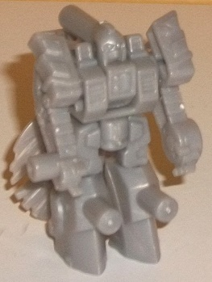
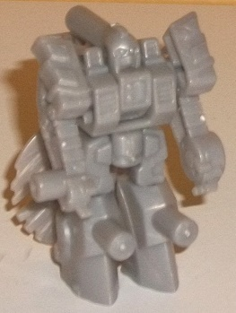
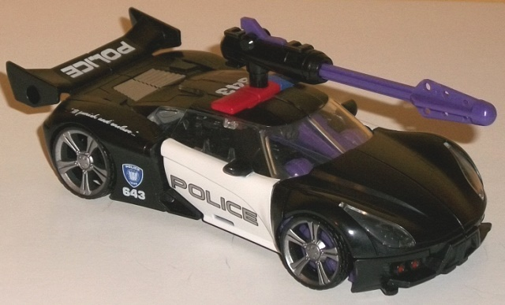
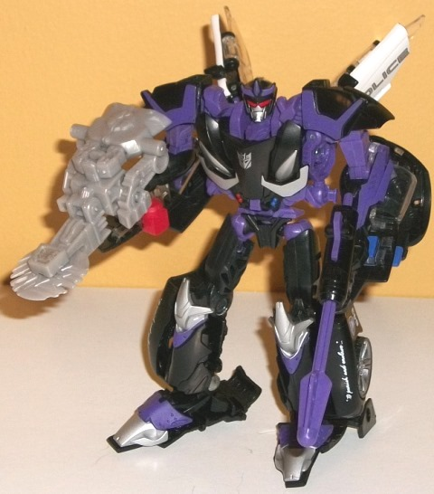

Allegiance : Decepticon
Size : Mini-Con
Difficulty of Transformation : Very Easy
Color Scheme : Light milky gray and some silver and clear plastic
Individual Rating : 6.0
 Frenzy
Frenzy

Allegiance
: Decepticon
Size
: Mini-Con
Difficulty of Transformation
: Very
Easy
Color Scheme
: Light milky gray and
some silver and clear plastic
Individual Rating
: 6.0
Given that this is a
more "normal" Barricade in terms of Transformers aesthetics, it only makes
sense that his little buddy Frenzy gets a similar treatment as well! For
this version, Frenzy is a Mini-Con-- and like all FunPub toys, he's a redeco,
but of a previously Japanese-only "Arms Micron" (Mini-Con) named Sou. Thus,
this portion of the review will be as if Frenzy is a new mold-- since,
for the purposes of this site, he is.
Frenzy's weapon mode
(see the picture of Barricade's robot mode below) is a sawblade with a
buncha junk in the trunk. Ths sawblade is certainly the big connection
here to
Movie Frenzy
, given that the latter
fired saws out of his chest, and the saw rotates quite freely in this mode.
That said, Frenzy is almost entirely that boring light milky gray-- not
something I want in an expensive exclusive, even if he's merely more of
an accessory. The only part that isn't unpainted light milky gray is a
bit of clear plastic in the center of the saw blade, which has a silver
Decepticon symbol painted on it. That's it-- not even any paint on the
robot face, or on the saw. As for the overall structure of this mode...
well, as I said, the sawblade parts look nice, but Frenzy's entire robot
mode is just folded up a bit in the back. Granted, the legs make for a
nice "armguard" for whatever TF is holding him, but the arms on the sides
are really blatantly obvious, as are the upper legs. On the plus side,
there's plenty of connection points, with standard connection pegs on the
sides of the upper section of this mode, a long peg on the bottom, another
shorter peg on the right arm, and corresponding connection holes on the
left arm and on the underside of the saw extension, so there's a ton of
ways you can mount Frenzy on larger TFs.
Frenzy's transformation
is very pretty straightforward-- just unfolded the robot parts and bend
the sawblade behind the back. The sawblade makes for a rather significant
extra on the back, but it stays out of the way so it's not that bad, particularly
considering the small size and simplicity of the Arms Micron toys. The
core robot mode for Frenzy looks quite well-done and well-proportioned,
with a good amount of mold detailing-- he's got some quite intricate detailing
on some parts such as his arms where they almost look like treads or belts,
but he also has some nice detailing otherwise, like vents on his chest
and shoulders, some asymmetrical detailing on his chest, and a rounded
face with two eyes and a Prime-esque faceplate. This robot mode really
has pretty much no visual relation to Movie Frenzy beyond the color, though.
The pegs on the knees, the back of the head, and the side of one arm also
look a bit odd, too. As for articulation, Frenzy can move back-and-forth
at the shoulders, back-and-forth at the hips (both legs move as one), his
knees can rotate, and his head can actually look down a little bit because
of his transformation, making him one of the more articulated Arms Micron
toys. I certainly would've liked some elbow movement, but overall it's
pretty adequate for the size. Of one note is that Frenzy is slightly misassembled--
his hips are on backwards. This is easily fixed just by applying a bit
of pressure; you can pop the hip piece out, reverse it, pop it back in,
and then swap the shins, but if this makes you uncomfortable on something
like a Club exclusive it's no biggie, as all you'll just have to deal with
are hollow-looking hips.
 Barricade
Barricade


Allegiance
: Decepticon
Size
: Deluxe
Difficulty of Transformation
: Medium
Color Scheme
: Black, moderately
dark purple, and some clear plastic, white, silver, dark blue, and red
Individual Rating
: 8.7
(NOTE: Because this is a repaint, this is not a full-blown review. This mainly covers any changes made to the mold and the color scheme, and merely compares it to the original Prime deluxe Smokescreen toy. For a review on the mold itself, read the review of the original Prime deluxe Smokescreen here .)
Barricade's vehicle mode
is rendered incredibly faithfully to his
initial
movie design
; he's mostly black with white doors, and the fonts of
his various logos-- from "POLICE" to the 643s to his Decepticon blue police
emblem to his infamous "To punish and enslave..." logos are all spot-on
taken from the movie toys. His transparent plastic is also clear-- as is
the case with pretty much every one of his movie toys. He's also got nice
silver paint on his rear vents and wheel hubs, as well as red headlights,
though his taillights/back bumper are sadly unpainted. Oddly, his siren
is painted about two-thirds red and one-third blue, whereas the center
part SHOULD be clear plastic or some neutral color like white. My guess
is some kind of miscommunication with the factory, but it's easily overlooked.
In robot mode is where Barricade breaks much more obviously from his movie
counterpart, with a good amount of moderately dark purple entering the
mix-- particularly on his shoulders and upper arms, but also on his headcrest,
waist, and a few paint apps on his legs and feet. He has the faux car chest
details painted well with a good amount of silver, and I love the callback
to his police siren in that half of the faux headlights on his chest are
red while the other half are blue. This all helps break up his colors considerably
more and makes his robot mode look more catchy color-wise than his movie
counterpart (even though his movie counterpart DID often have at least
have a little bit of purple on him).
However, even though
I'd expect some changes to his movie look given that this Barricade is
supposed to have more of a "traditional" look for this version, no mold
change has been made to his face-- he has the same face sculpt (and lack
of Beast Hunters accessories) as
Beast Hunters
Prowl
did. With the red optics, the face can look evil enough, but
he REALLY needed a new head to more obviously link him to Barricade in
robot mode, like perhaps a similar face outline or perhaps teeth in his
mouth. The spiky Beast Hunters accessories that came with Smokescreen also
would've worked perfectly with Barricade, and it's another major bummer
that these weren't included; even with the awesome color scheme, tha lack
of mold changes here brings down Barricade's score more than you'd think
from a simple description.
TFSS "Prime" Barricade
& Frenzy is a neat little duo, with Barricade being about as fine of
a redeco for the character that you can get out of a Prime toy without
remolding the head, and Frenzy being one of the nicer Japanese Arms Microns
molds, even if he has basically no paint, little visual relation to Movie
Frenzy, and is all light gray. That said, this release probably applies
to a rather niche audience even for a Club toy, only really being a recommended
purchase if you both A. really want a toy of Barricade but B. hate the
movie style. Otherwise, there's several Movie Barricade toys that are better
and considerably less expensive. I'm a fan of the "bad cop" character so
I enjoy having both, but I don't see a lot of similar love coming from
other fans-- and I can't deny Barricade DESPERATELY needed a new headsculpt,
and the Beast Hunters armor would have been nice as well. The lack of either
of those take TFSS Barricade from what could have been one of the best
exclusives from the TFSS 2.0 lineup to merely a middle-of-the-pack release.
Reviews by Beastbot